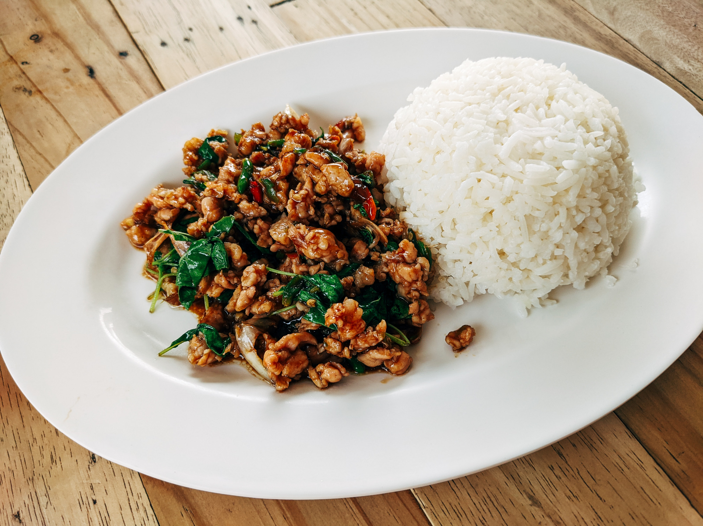

Back to Recips Thai food
Stir Fried Thai Basil with Minced Pork and Rice

Stir Fried Thai Basil with Minced Pork and Rice is food from Thailand
Ingredient
- Minced pork 300 grams
- 50 g basil leaves
- Red Chili Jinda 1 tbsp
- tbsp garlic
- 1 tablespoon oyster sauce
- 1 tbsp fish sauce
- 1 teaspoon granulated sugar
- 1 tbsp oil (for stir-frying basil)
- 1 chicken egg
- Oil (for frying fried eggs) ½ cup
Steps
- Set the pot of oil and wait for it to get hot. Gradually break the eggs into the pan and fry until the eggs are crispy. Scoop up and set aside to drain the oil.
- Heat up a pan with enough oil. then add garlic and Jinda red pepper, stir until fragrant Then add minced pork and stir fry.
When the pork is cooked, season with oyster sauce, fish sauce and sugar. Stir until everything is well combined. Then add basil leaves and stir fry until it softens a little. Read more at
- Put hot steamed rice on a plate, topped with stir-fried minced pork with basil and minced pork. Topped with crispy fried eggs, served with chilli fish sauce. Just like this, we will get a delicious stir-fried basil menu that we can cook by ourselves.